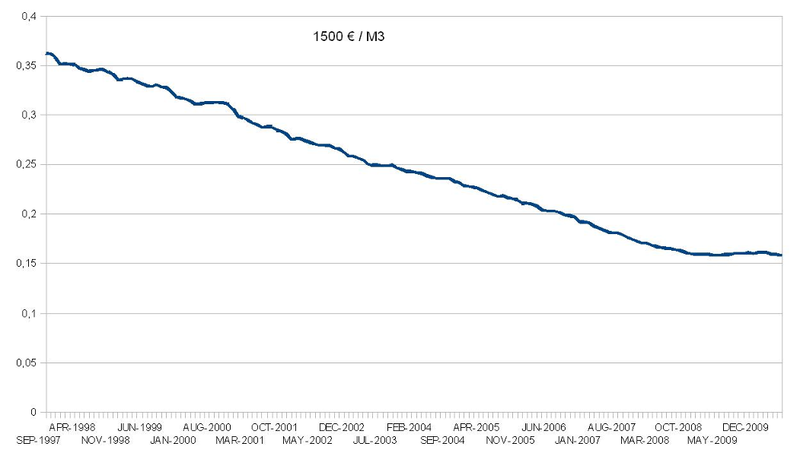

Monetary supply and Relativity
Money density
Economic zone money supply study in an as a global figure is not enough to ascertain if the money is correctly created or not.
In fact, if we can in some circumstances note that a monetary supply grows to a maintained and constant rhythm, his density of non symmetric creation in such or such economic sub-part would violate the ethic of set of solutions of the “tree producers’ issue” expanded to N citizens of the economic zone.
Non-symmetric monetary creation density issues are essentially due to the hoarding by an under-part of citizens of the monetary creation for a biased application of the value creation, and it has been done at the expense of all present and future actors, in terms of both “first choice” and “value judgment”.
Global monetary information publication should therefore be completed, for an efficient citizen control of monetary ethics, by a relative information to a spacial density of creation of that money, knowing that this density should be balanced.
Therefore in France, it is because the monetary creation is essentially concentrated around Paris that the economy is ostensibly the most flourishing, and that the population flows are condensed there. The same reverse monetary creation realized in the provinces during the same period of 50 years would produce without doubt a similar result (always at the expense of other cities).
Growth
We measure by « c » the growth of the monetary supply. That is furthermore called « economic growth », within the meaning usually given to GDP, fundamentally depends on « c ». But this is the uncertainty about « c » in the economies falsified by arbitrarily created « debt » money, which generally destroys the growth by losing reference’s individuals in terms of money efficiency.
There is a fundamental error to estimate the “growth” with the GDP, which measures exchanges of values. In fact, the growing of the monetary supply, if at all it is sufficiently dense in the economy, will have as effect, at constant production, to mechanically rise the prices, without performing on the exchanges quantity, the costs are generally passed following the growing of prices, and not at the same time, so this will rise GDP, even if it would be produced and consumed, from one year to another, the same goods and services.
It is also possible to see GDP rising at lower production and lower exchanges, if money is created in a sufficient and significant proportion to offset.
“Growth” with “GDP” point of view is therefore a perfectly biased notion, whereas the growth of the monetary supply represents a perfectly sure, known, and verifiable information and does not depend on the chosen repository to measure it unlike to all other estimation.
Following graph shows the whole monetary supply M3 composed of M1, (M2 - M1) and (M3 - M2) of euro zone from 1997 to october 2012 in quantity and also in growth on 12 months (ordered on % on the right). Growth in euro from 1997 to 2007 had reach on average 8% per year, for a distribution within the 330 millions of citizens of the economic zone, of an excess of common money non published and certainly non-dense.

This monetary creation essentially profits to States and big companies even if they produce most of the time with outdated and extremely expensive processes, obsoletes values and without interest for 90% of the population. This system does only benefit to some privileged individuals, and encourages to an incestuous speculation between Banks. Winner stocks his earnings, and the loser is bankrupt, acting thus at the end of operation, a central and unbalanced monetary creation.
Even if money is an immaterial and a common tool to exchange productions in an economic zone, it is used to define a power linked to the capacity to deprive the sovereign citizens of the exchange tool while forcing them to use it (and therefore especially to pay under the constraint of tax and interest credits in a money whose in addition the emission is controlled).
It is however obvious that the only decision to stop allocating additional credits to a pseudo-isolated economic zone, makes it on the mechanical incapacity (and not fundamentally productive) to repay capital and interests “in the money”. How do we make sure to pay with something that we don’t produce ourselves? The asymmetric money producer is taking the easy way out by defining and producing itself exclusively and therefore at the expense of others which takes place as measured value!
“Growth” within the meaning of GDP can be a total lure. The only growth is that of the monetary supply, which accompanies with a delay effect of growth in monetary terms of monetized economic exchanges, regardless of their relative form in space and time.
There is then an unacceptable scientific angle to perform measures thanks to a tool whose the experimenter chooses the settings according to his goodwill, and without considering of modifications in its results other than its subjective choices.
Purchasing potential
If we consider monetary supply growth, we won’t talk about purchasing power of a given quantity of money without getting in touch with that same mass. We will therefore talk about purchasing potential. The angle which consists to define the price of a “basket of goods” arbitrarily defined as “purchasing power” measure, returns to define a timeless purchasing power wherein honestly we shall find therefore in 2010 quantities of “hens to the Henri IV’s can”, “1900 cabs”, “formation to subtle alchemist art” or other “books produced by copyist monks”.
From the Relative Theory of Money point of view, we can only refute to accept such a method, based on “absolute” values even if there were reviewed and updated, because there will always be subject to arbitrary choices.
Following graph represents a 1500€ “fixed” salary evolution reported to the monetary supply of the Euro (expressed in billions of euros) from 2000 to 2010, and therefore to the potential purchasing.
Purchasing potential of a fixed salary had fallen more than 50% between 2000 and 2010. In other words, it is likely that the prices of a majority of goods “relatively stable” in terms of application between these two dates had raised more than 100% on the same period. It is very surprising to see how lying about proceedings however verifiable can be spread within democracies where the media power is expected to represent the transparency’s warranty.
{kind=link}
Relative Theory of Money does not say that a “salary” should follow monetary supply inflation, that is in fact impossible, highest salaries would benefit and would participate to an increase in the monetary supply greater than the balance rate! Moreover, nothing ensure to a given production to be exchangeable in anything tomorrow, this depends on individual and collective choices which change over time.
Relative Theory of Money says that this is Universal Dividend, and only it, which is indexed to the monetary supply, and which ensures that monetary basis is symmetrically distributed, and therefore compatible with the three fundamental economic freedoms.
It also says that we should correctly measure economics magnitudes in relative data, taking into account of the quantity of the existing money per citizen within the economic zone, so that the economic actors should do their choices wittingly and according to their individual point of view.